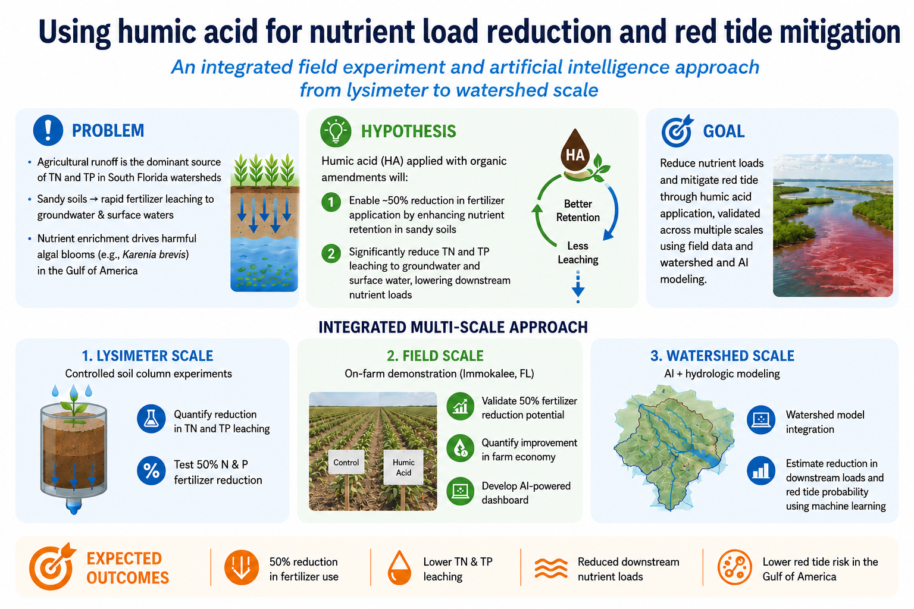

Using Humic Acid for Nutrient Reduction and Red Tide Mitigation
This U.S. Environmental Protection Agency (EPA)-funded, three-year collaborative research and demonstration project brings together Florida Gulf Coast University (FGCU), the University of Florida/IFAS (UF/IFAS), and Florida State University (FSU) to evaluate humic acid (HA) as an agricultural soil conditioner for Southwest Florida. The project tests whether HA can improve nutrient and water retention in sandy soils, allowing nitrogen and phosphorus fertilizer inputs to be reduced while maintaining or improving tomato production and limiting nutrient losses to groundwater and surface water.
The research connects controlled lysimeter and field experiments at UF/IFAS SWFREC in Immokalee with regional analysis of the Peace River watershed and Charlotte Harbor. Measurements of nutrient leaching, soil-water conditions, crop response, UAV-based crop health, and farm economics will be translated into watershed nutrient-load scenarios, machine-learning estimates of Karenia brevis red-tide risk, and an AI/LLM-supported decision tool for farmers and watershed managers. The project therefore links on-farm nutrient management → water quality → watershed nutrient delivery → coastal red-tide risk.
